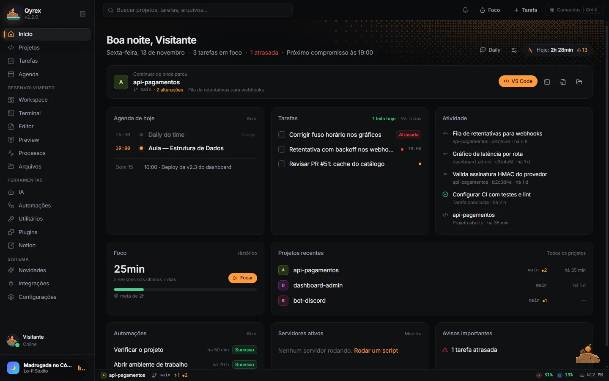
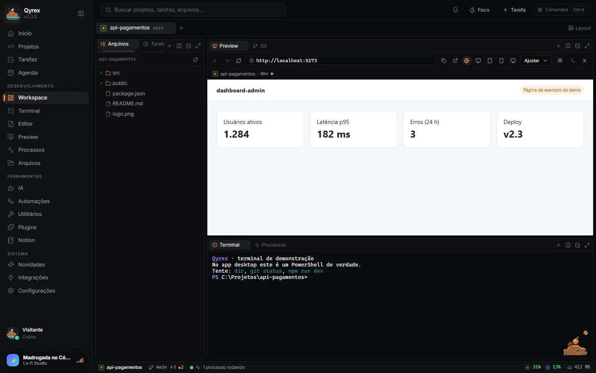
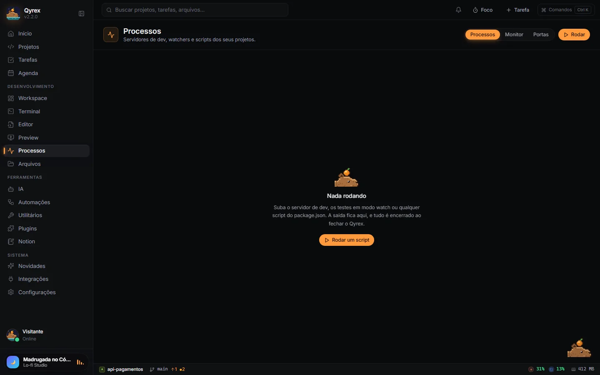
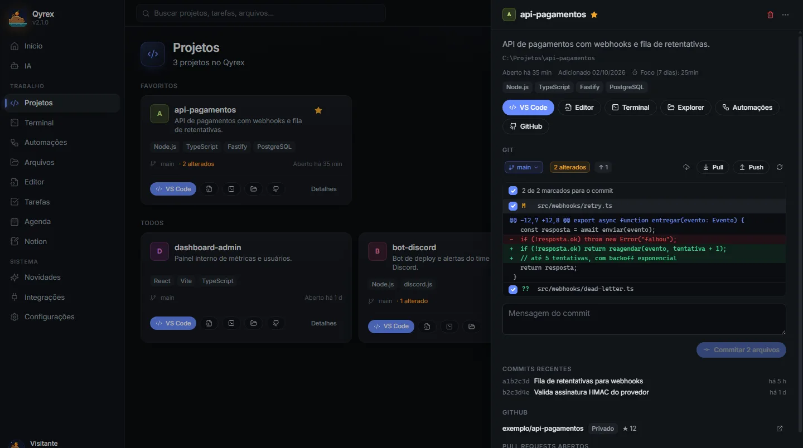
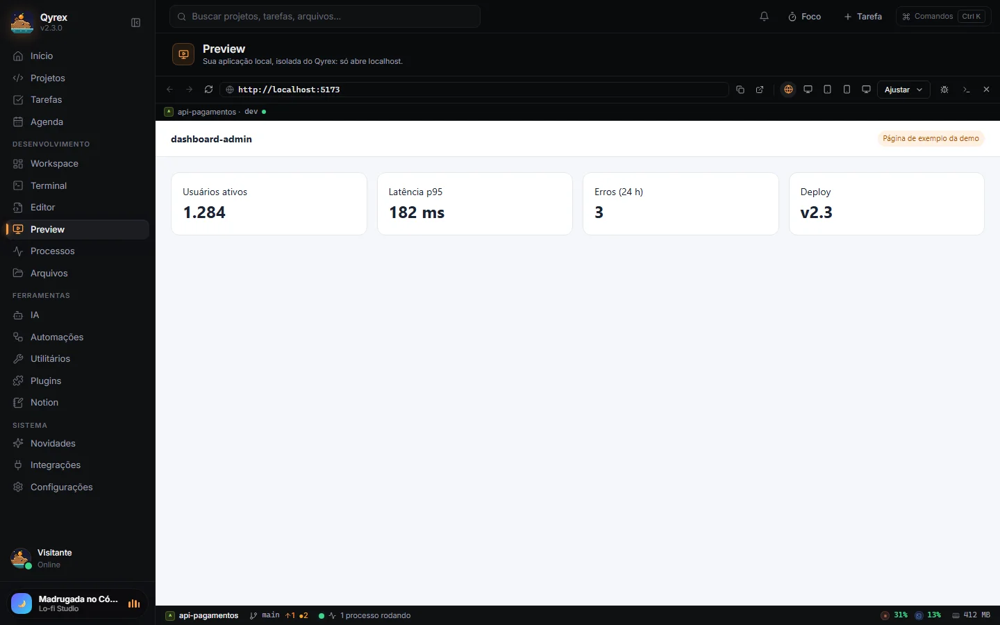
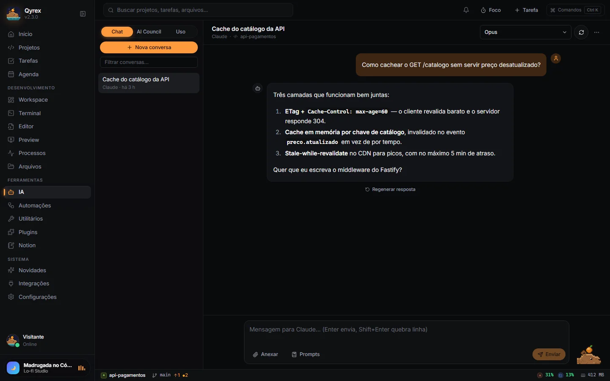
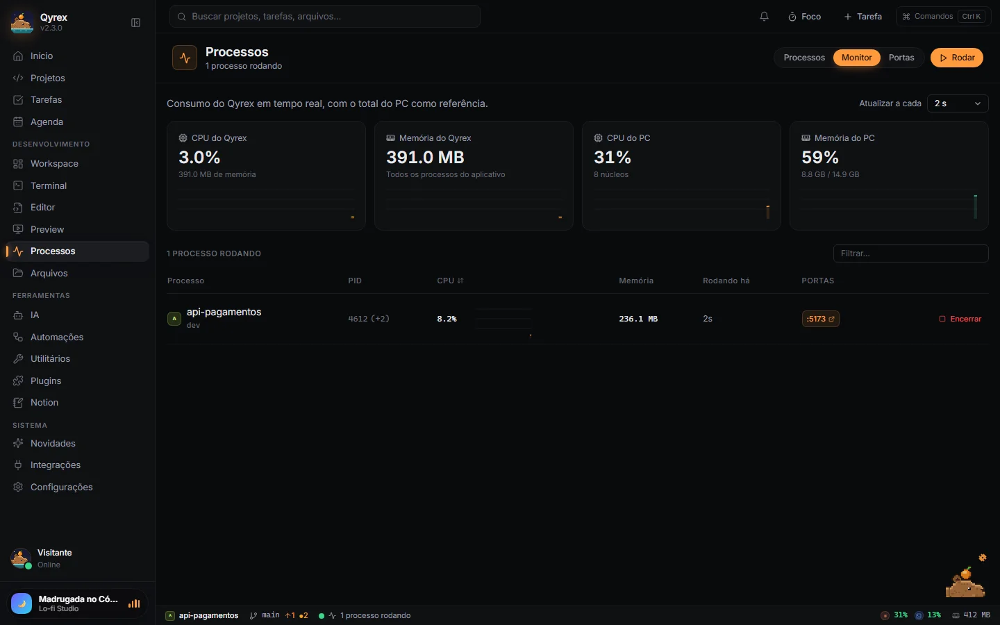
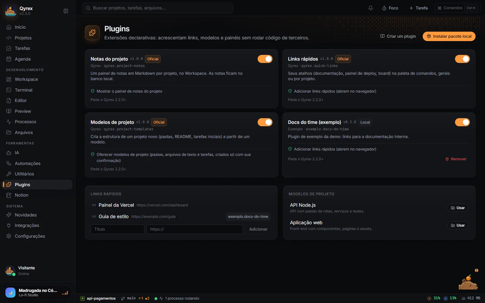
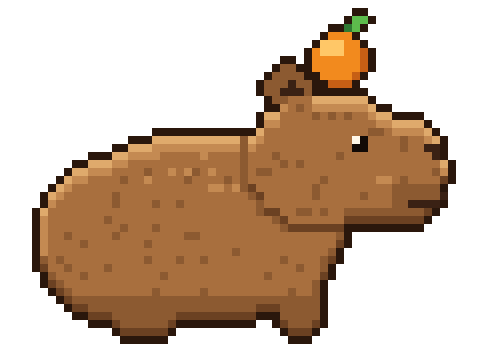
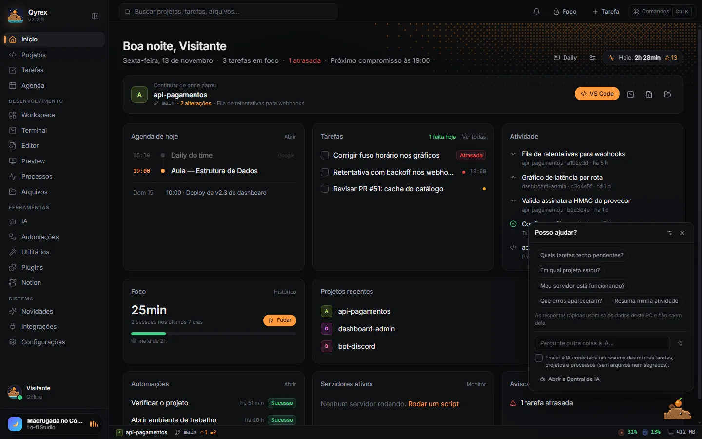

Menos janelas, mais contexto
Arquivos, editor leve, terminal, Git, preview, IA, tarefas, notas, processos e monitor no workspace do projeto.
Para devs · Windows · Open source
Do primeiro comando ao último commit: projetos, terminal, Git, preview e IA no mesmo workspace. Tudo no seu PC.
Gratuito · licença MIT · Windows 10/11 64-bit

01 / Por dentro
Explore capturas reais do app. Este tour não executa comandos.
Divida painéis, arraste abas e maximize o que precisa. Alterne entre Desenvolvimento, Debug, Git e Foco; o layout fica salvo por projeto.

Rode scripts do package.json ou um comando livre, sempre com confirmação. Veja a saída ao vivo, abra URLs detectadas e libere uma porta ocupada no painel de portas.

Confira alterações por arquivo, selecione o que entra no commit e troque de branch. Faça pull/push sem --force e acompanhe o CI do GitHub Actions.

O preview fica isolado do app e aceita apenas localhost. Teste desktop, tablet, celular ou tamanho personalizado, com zoom, console da página e DevTools.

Converse com Claude, ChatGPT e Gemini; compare respostas no AI Council. Gere uma sugestão de mensagem de commit ou um resumo para a daily.

Veja quanto o próprio Qyrex usa de CPU e memória, com os totais do PC como referência. Os scripts iniciados pelo app também têm consumo individual.

Instale um manifesto JSON com permissões explícitas. Notas do projeto, Links rápidos e Modelos de projeto já vêm embutidos; nenhum código de terceiros é executado.

02 / Recursos
Arquivos, editor leve, terminal, Git, preview, IA, tarefas, notas, processos e monitor no workspace do projeto.
Execute ferramentas com confirmação e acompanhe processos, URLs locais e portas.
CPU, RAM e alertas para o PC, o Qyrex e os processos que ele iniciou.
JSON, JWT, Base64, URL, timestamp, regex, diff, UUID, hash, cores e nomes.
Tarefas, agenda Google, Notion, automações e foco junto dos projetos.
Backup local e sincronização por pasta da nuvem. O app funciona offline; IA, GitHub, Google e Notion precisam de internet.
03 / Seu espaço
Abra vários projetos em abas. Divida o espaço entre arquivos, terminal e preview, arraste abas e maximize um painel quando precisar. O layout fica salvo por projeto.
Escuro, Claro, Meia-noite, Violeta, Areia e Onsen no app, com interface em português ou inglês.
As mesmas cores do app. Escolha o seu tema.
04 / Inteligência, com escolha
Use Claude e ChatGPT pela assinatura do Claude Code/Codex já logados no PC ou por API key. Gemini também está disponível por API key.
O AI Council reúne perspectivas de vários modelos. Peça uma sugestão de mensagem de commit ou um resumo para a daily. A decisão de executar continua com você.
Configurar a IA →05 / Companhia de código
Ela reage a tarefas, builds e sessões de foco. Responde perguntas rápidas usando apenas dados locais.
Uma pergunta livre só vai para a IA com seu consentimento.


06 / Extensível por definição
Notas do projeto, Links rápidos e Modelos de projeto já vêm embutidos. Adicione pacotes locais com um manifesto JSON.
Plugins são declarativos: campos desconhecidos são recusados e nenhum código de terceiros roda.
Ver o manifesto e as permissões →07 / Comece por aqui
Qyrex para Windows 10/11 64-bit. Gratuito, open source e com atualização automática pelo app.
08 / FAQ
Sim. O Qyrex é gratuito, open source e distribuído sob a licença MIT.
O app funciona offline. IA, GitHub, Google e Notion precisam de conexão; baixar e atualizar o app também.
Somente Windows 10/11 64-bit. Linux e macOS não são suportados.
Baixe o Qyrex-Setup.exe e siga o assistente. O instalador não tem assinatura digital; no SmartScreen, use Mais informações → Executar assim mesmo. Veja as instruções de instalação.
Em Integrações, use sua assinatura com Claude Code ou Codex já logados no PC, ou informe uma API key. Gemini usa API key.
São manifestos JSON com permissões para links rápidos, modelos de projeto e notas. Nenhum código de terceiros é executado.
Abra uma issue no GitHub com os passos para reproduzir o problema.
O próprio app faz a atualização automática. Você também pode conferir as versões na página de releases.